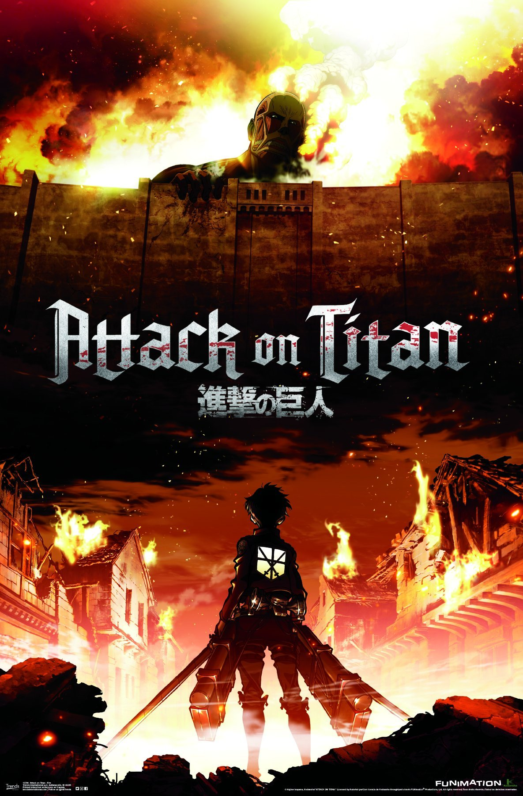
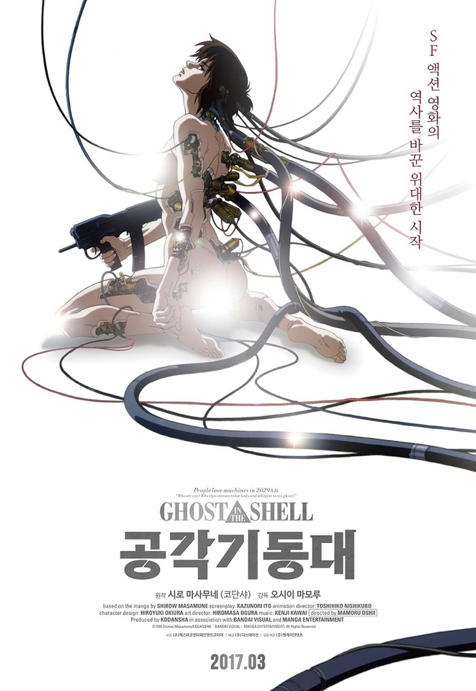
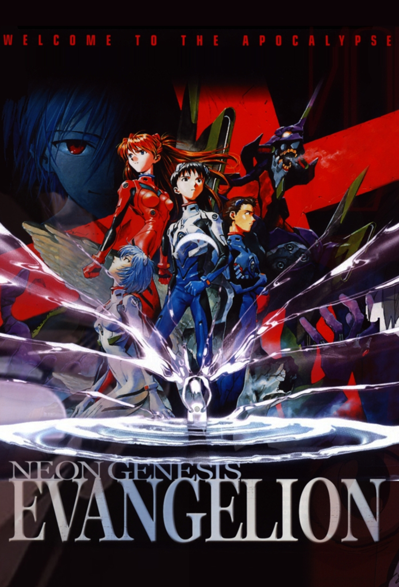
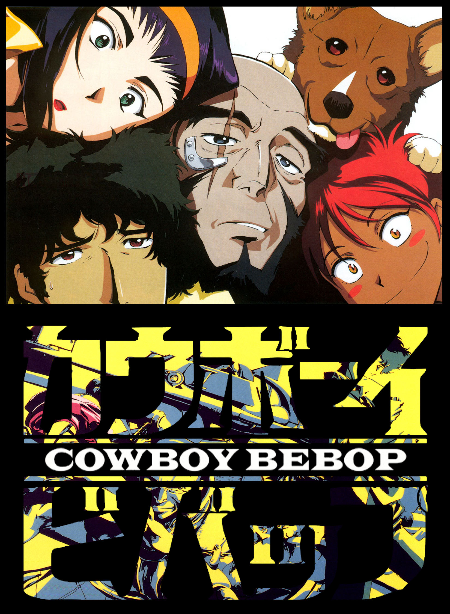
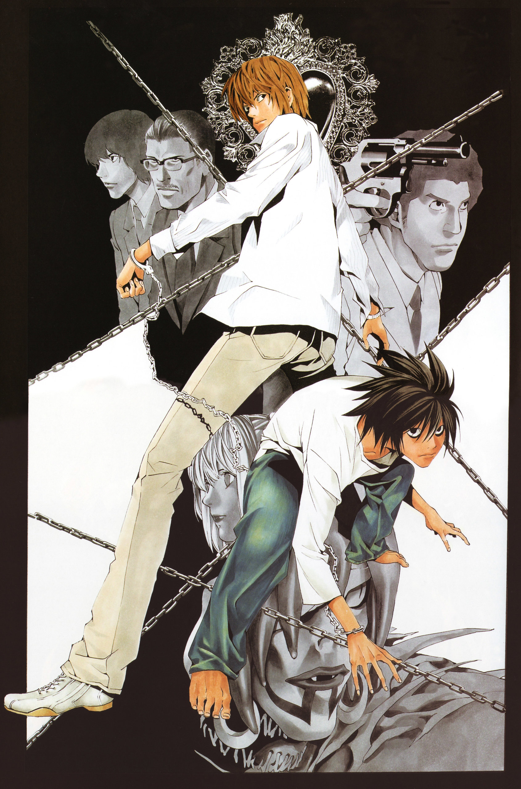
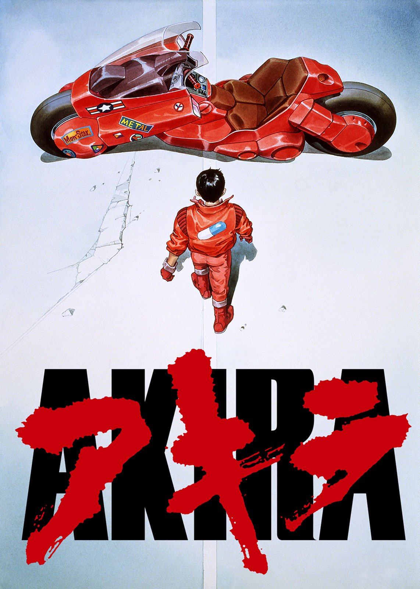
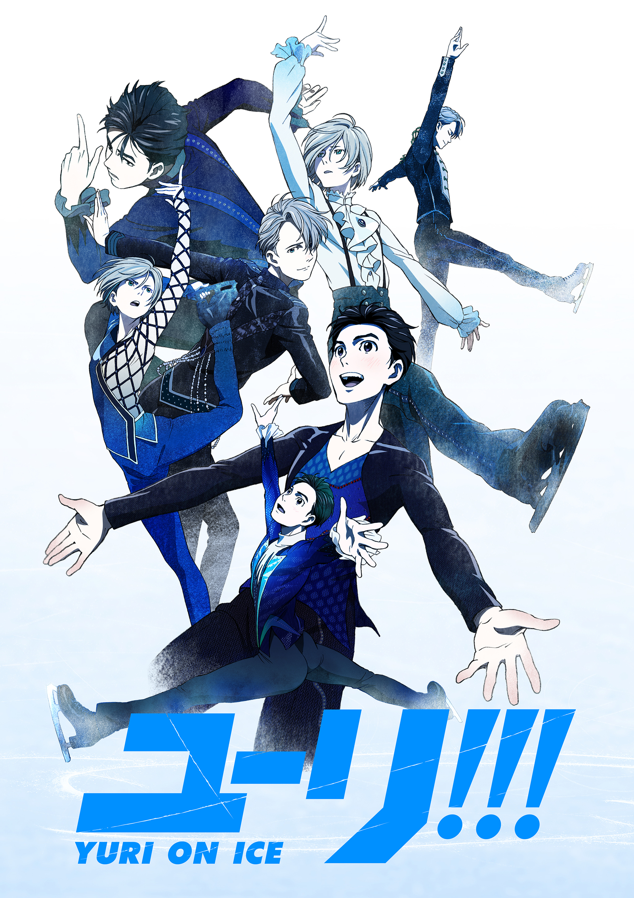
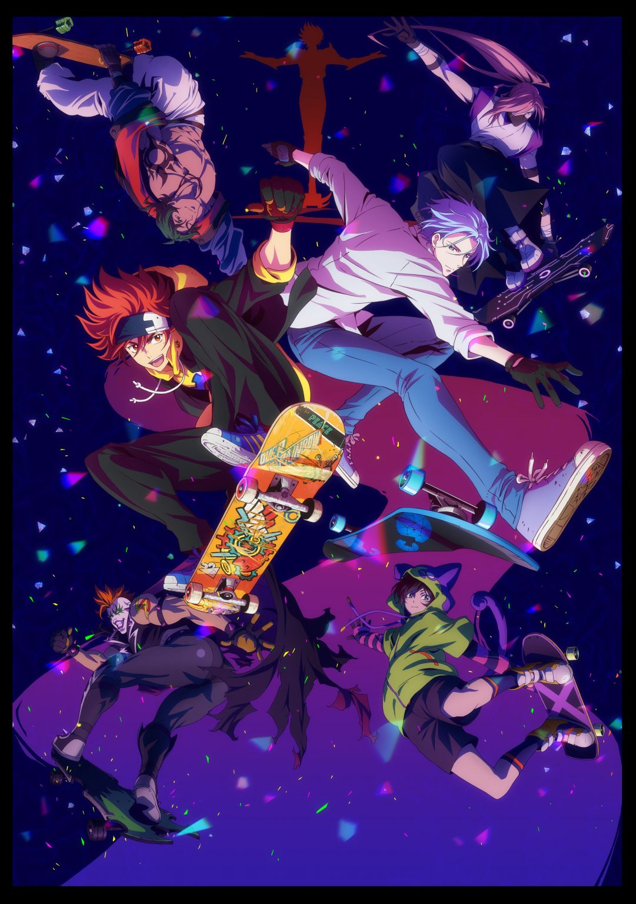
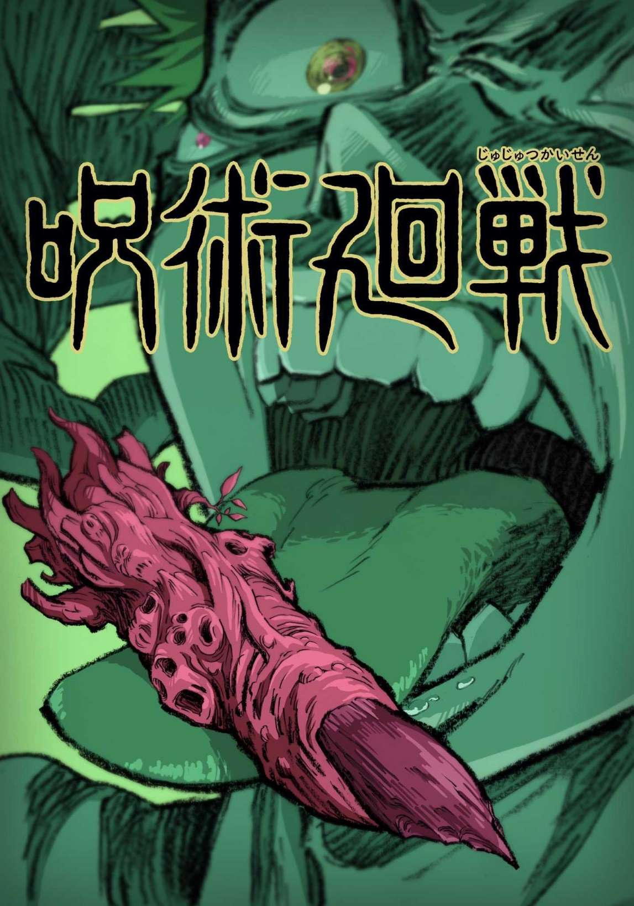
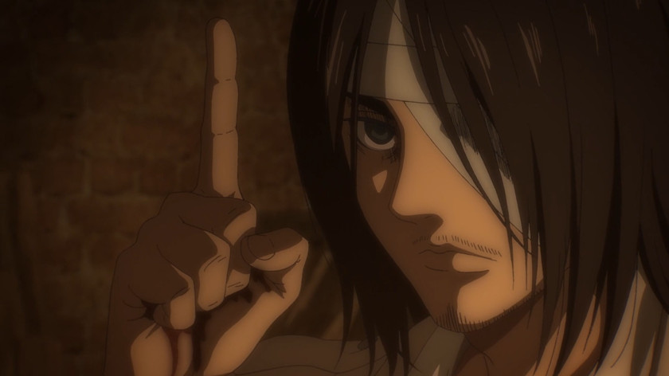

ПОДБОРКА АНИМЕ
- Атака титанов (Attack on Titan)
- Призрак в Доспехах (Ghost in the Shell)
- Евангелион (Neon Genesis Evangelion)
- Ковбой Бибоп (Cowboy Bebop)
- Тетрадь смерти (Death Note)
- Акира (Akira)
- Юри на льду (Yuuri! on Ice)
- На скейте в бесконечность (SK8 the Infinity)
- Магическая битва (Jujutsu Kaisen)
Атака титанов (Attack on Titan)
-

- Аниме по японской постапокалиптической манге, написанной и иллюстрированной Хадзимэ Исаямой. Согласно завязке манги, за 100 лет до начала её событий человечество было практически полностью уничтожено неизвестной гуманоидной расой огромных существ, названных «титанами», из-за чего было вынуждено укрыться за тремя высокими стенами. В начале манги титаны благодаря невиданным ранее разумным «колоссальному» и «бронированному» титанам вторгаются в город, проломив ворота во внешней стене, убивая огромное количество людей, в том числе и мать главного героя, Эрена Йегера, после чего тот клянётся отомстить титанам, вступив в ряды армии.
Призрак в Доспехах (Ghost in the Shell)
-

- Полнометражный аниме-фильм 1995 года в жанре киберпанк, основанный на одноимённой манге Масамунэ Сиро 1992 года. 2029 год. Границы между государствами окончательно рухнули, благодаря повсеместно распространившимся компьютерным сетям и кибертехнологиям. Когда давно разыскиваемый хакер по кличке Кукловод начинает вмешиваться в политику, 9-й отдел Министерства Общественной безопасности — группа кибернетически модифицированных полицейских — получает задание найти и остановить хакера. Но в ходе расследования возникает вопрос: кто же такой Кукловод в том мире, где грань между человеком и машиной практически стерта?
Евангелион (Neon Genesis Evangelion)
-

- Полнометражный аниме-фильм 1995 года в жанре киберпанк, основанный на одноимённой манге Масамунэ Сиро 1992 года. 2029 год. Границы между государствами окончательно рухнули, благодаря повсеместно распространившимся компьютерным сетям и кибертехнологиям. Когда давно разыскиваемый хакер по кличке Кукловод начинает вмешиваться в политику, 9-й отдел Министерства Общественной безопасности — группа кибернетически модифицированных полицейских — получает задание найти и остановить хакера. Но в ходе расследования возникает вопрос: кто же такой Кукловод в том мире, где грань между человеком и машиной практически стерта?
Ковбой Бибоп (Cowboy Bebop)
-

- События «Cowboy Bebop» происходят в постапокалиптическом будущем 2071 года, где планета Земля практически безжизненна, а человечество расселилось по всем доступным планетам и их спутникам Солнечной системы. К 2071 году достаточно распространённой стала профессия охотника за головами — «космического ковбоя», путешествующего по обитаемому космосу в поисках преступников, за поимку которых живыми назначена награда, выплачиваемая в марсианских вулонгах. Именно этим зарабатывает себе на жизнь экипаж межпланетного корабля под названием Bebop, на котором судьба сводит четырёх человек и одну собаку.
Тетрадь смерти (Death Note)
-

- Старшекласснику Лайту Ягами в руки попадает тетрадь синигами Рюка. Каждый человек, чьё имя записать в эту тетрадку, умрёт, поэтому Лайт решает бороться со злом на земле.
Акира (Akira)
-

- Спустя 31 год после Третьей мировой войны и ядерной бомбардировки столицы Японии, воссоздан новый город — Нью-Токио. Внешне все под контролем, однако страна теперь напоминает профашистское государство, жесточайшим образом подавляющее попытки мятежа. В исследовательских центрах проводятся парапсихологические опыты над людьми для разработки совершенного вида оружия.В стране возникает религиозный культ сверхчеловека по имени Акира, приход которого, якобы, сможет решить все проблемы Японии.
Юри на льду (Yuuri! on Ice)
-

- Японский аниме-сериал о фигурном катании. Фигурист из Японии Юури Кацуки после выступления на соревнованиях терпит неудачи и впадает в отчаяние, так и не решив, сможет ли он собрать всю волю и дальше идти к победе.Спустя некоторое время в гости к японскому фигуристу приходят его коллеги пятикратный чемпион Виктор Никифоров и начинающий спортсмен Юрий Плисецкий. Его соратники по спорту искренне хотят поддержать Юури. Впереди новые соревнования по фигурному катанию и всем троим предстоит нелегкая борьба за место в пьедестале.
На скейте в бесконечность (SK8 the Infinity)
-

- На Окинаве группа хардкорных фигуристов после полуночи принимает участие в секретном соревновании без ограничений, известном как «S», мчась друг на друга на скейтбордах по извилистой дороге, вырезанной из заброшенной шахты, и иногда формируя «биф» (соперничество ) друг с другом. Рэки, второкурсник средней школы и заядлый фигурист, однажды ночью берет нового переводного ученика Лангу в С. и в конечном итоге затягивает его в мир скейтбординга.
Магическая битва (Jujutsu Kaisen)
-

- Мир, в котором демоны питаются людьми, а те об этом даже не догадываются. Когда-то давно самый могущественный демон был повержен, а части его тела разбросаны по свету. Тот, кто сможет их собрать и поглотить, получит безграничную власть и даже сможет уничтожить человечество.
НАВЕРХ
